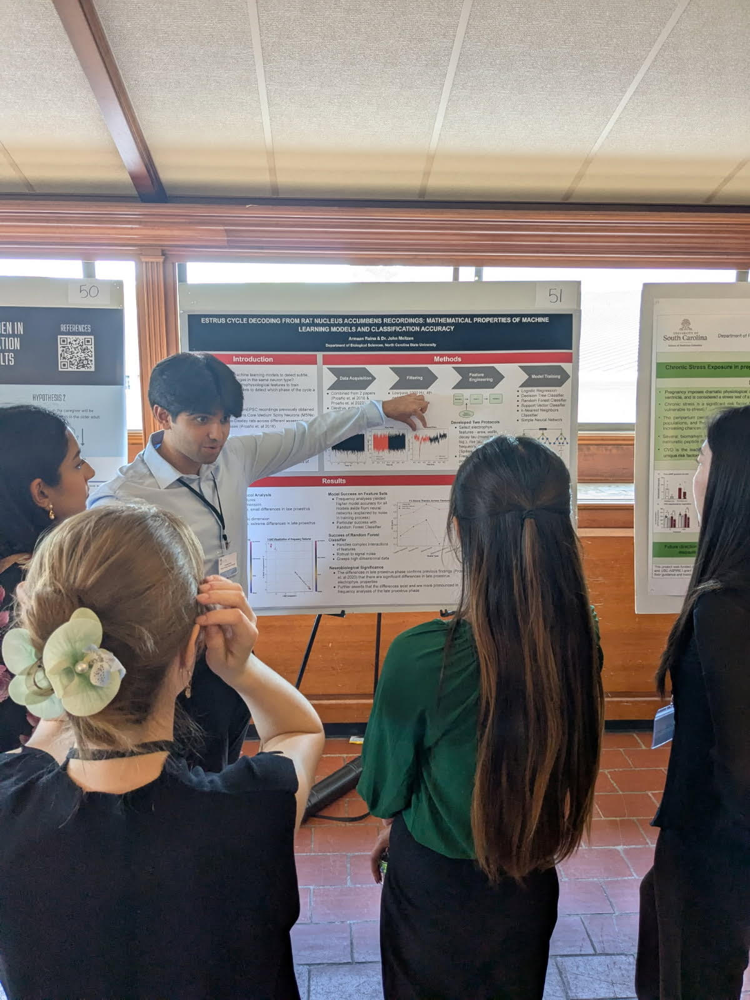
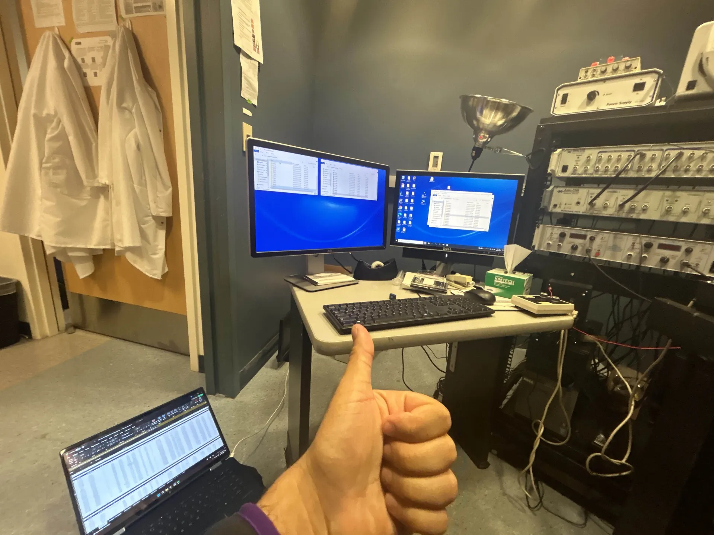
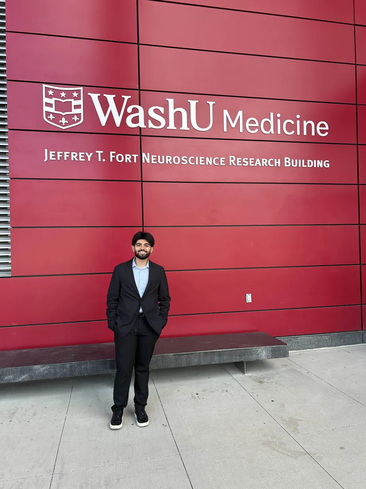

Jan. 2024 - Present
Using single-cell neuron recordings to classify animals across phases of the estrous cycle, a study of both ML model and single cell interpretability.
Aug. 2024 - Present
Working on reinforcement learning decoding applications for EMG-based upper-limb prosthetics.
May 2024 - Aug. 2024
Prototyped modifications to stereotactic depth electrodes for enhanced diagnostic fidelity in epilepsy patients.
Aug. 2023 - Dec. 2023
First research experience in undergrad, assisting in projects dealing with optimal learning conditions and trust in human-robot interaction.
NC State University
Taking the dataset I published in the mEPSC Dataset Project, I utilized various Python packages to import the data into google colab,
make it useable, and filter it. A variety of biological signal types (spiking, mEPSC, and passive membrane potential) each of
which capture different aspects of neuronal function were explored. I then tested the model accuracies of various machine learning algorithms
across features extracted from the different signal types, indicating which signal type encodes the state of estrous cycle phase best. This more broadly
represents an exploration of how best to computationally represent small scale neuromodulatory differences in cells within the brain.
On the right is a picture of my poster presentation at SYNAPSE 2025, alongside this, I was selected to give a lightning talk which you can listen to using the link below.


Dryad Digital Repository
As part of my first project in the Meitzen lab I used a simple Python script to automate the merging of many excel spreadsheets into a dataset with data from two papers which I manually cleaned. I gained a lot of knowledge about how to read academic papers and understand what is important amongst a lot of jargon during this time.
On the left is a picture of me working on the computer in the patch-clamp rig room in the lab. It's pretty crazy to think that we can poke singular neurons and figure out what they are up to.
Department of Neurosurgery
During my time with the Center for Innovation in Neuroscience and Technology (CINT) another undergraduate student and I drafted and prototyped substantial modifications to stereotactic depth electrodes to enhance their functionality while retaining their core purpose under Dr. Eric Leuthardt. I learned so much about FDA regulations/ pathways for medical devices, the differences in how neurosurgeons and engineers communicate, and the importance of observing before you build. I had the exciting opportunity to watch neurosurgery, work with very fancy 3D printers, and speak with experts from so many different domains.
